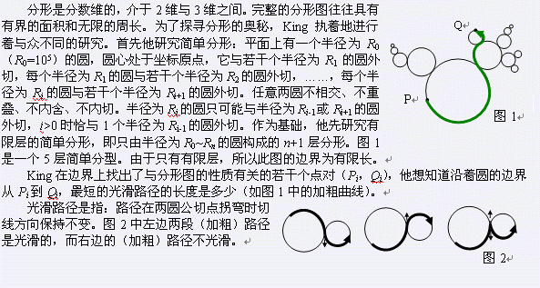

第一行为3个整数n，m和t。其中1<=n，n+1<=m<=3000，1<=t<=100000，m表示圆的个数，并且圆的编号为1~m。t为特殊点对数。 50%的数据满足m<=300，t<=1000。第二行为n个正整数R1~Rn，并且当i>=1时有1

第一行为3个整数n，m和t。其中1<=n，n+1<=m<=3000，1<=t<=100000，m表示圆的个数，并且圆的编号为1~m。t为特殊点对数。 50%的数据满足m<=300，t<=1000。第二行为n个正整数R1~Rn，并且当i>=1时有1
包含t行，其中第i行是一个整数Li，表示从点Pi到点Qi的最短光滑路径的长度/π后精确到整数的结果。
1 3 3
50000
0 0 0 0
150000 0 1 1
0 150000 1 1
3 5.497787 2 2.356194
3 1.570796 2 0.0
3 0.0 2 1.570796
175000
150000
200000